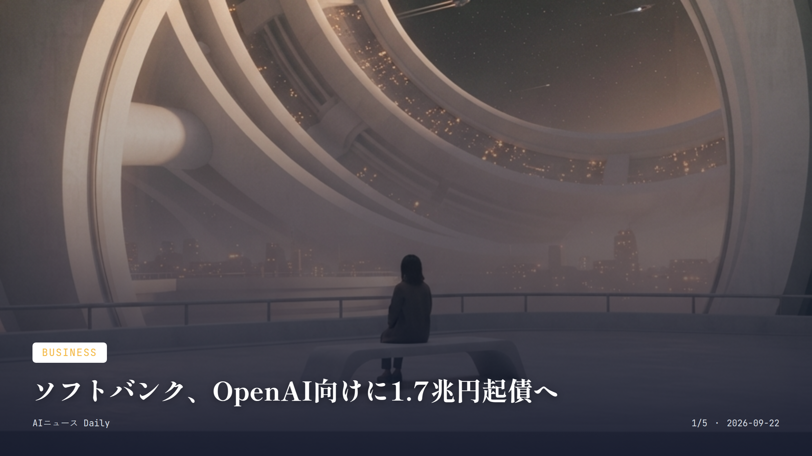
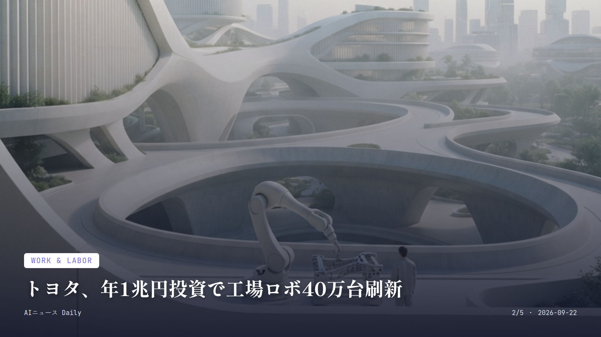
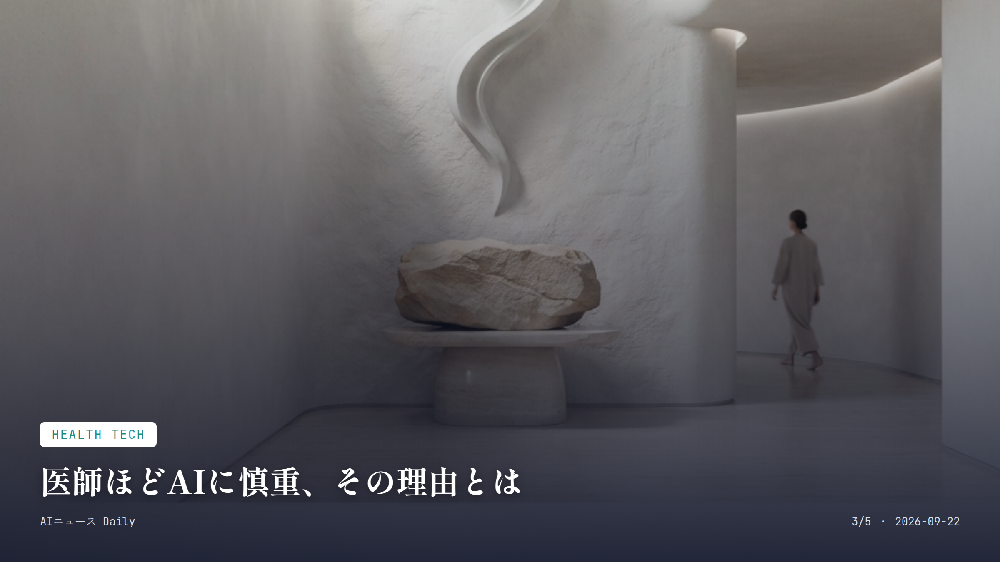
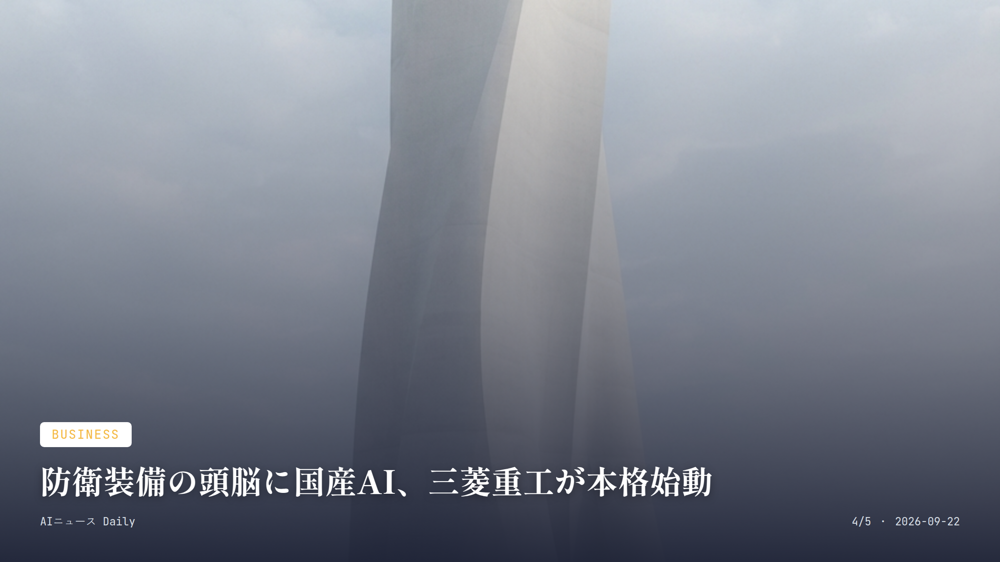
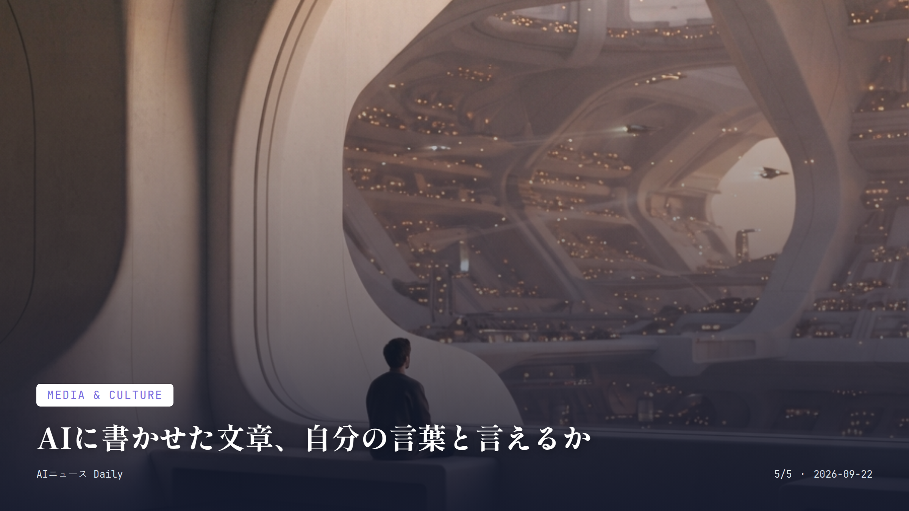

これは2026-09-22時点のアーカイブページです。最新のニュースはこちら
本サイトはアフィリエイトプログラムによる収益を得ている場合があります。
本サイトはGoogle AdSense等の広告配信サービスを利用しています。
🔊 2026-09-22分のまとめを音声で聴く
お使いのブラウザは音声再生に対応していません。
目次

Business
約1分で読める
ソフトバンク、OpenAI向けに1.7兆円起債へ
OpenAI追加出資の原資、ジャンク債で調達へ
ソフトバンクグループが100億ドルと10億ユーロ建ての社債発行に動き出したことが、タームシートで明らかになった。調達額は日本円換算で1兆7000億円超に達する見込みで、投機的格付け企業としては過去最大級のジャンク債案件になりそうだ。
使い道は、10月1日に決済予定のOpenAIへの追加出資（第3弾・100億ドル）と、一般的な事業資金。これで以前確保していた100億ドルのつなぎ融資は解消される形になる。
主幹事はシティグループとJPモルガン。価格決定は9月24日、決済は29日の予定で、孫正義氏は10月までにOpenAIへ約650億ドルを投じる計画の完了を目指している。
なぜ重要か 投機的格付け、つまりジャンク級のままこれだけの巨額調達に踏み切るのは、AI投資ブームの資金需要がいかに大きいか、そしてそれに伴う信用リスクがどれだけ膨らんでいるかを物語っている。日本企業がOpenAIの成長を支える最大級の出し手になっているという事実は、AI関連の負債が国内金融市場や孫氏個人の懐にまで波及しかねないことを意味する。社債市場の先行きを占ううえでも見逃せない一件だ。

Work & Labor
約2分で読める
トヨタ、年1兆円投資で工場ロボ40万台刷新
AI搭載ロボが匠の技を学習、28年から順次導入
トヨタ自動車が、欧州での投資家向けイベントで明かした方針が興味深い。2028年以降、世界60工場とグループ・サプライヤーが持つ計40万台のロボットを、毎年1兆円規模の投資で更新していくという。内訳はトヨタとグループで15万台、サプライヤーで25万台だ。
中核にあるのは、研究開発会社Toyota Research Instituteが仕込んだ「Large Behavior Models（大規模行動モデル）」。人の作業を学習して動きを生み出すフィジカルAIだ。人型ロボット「ELEY」なども現場に投入し、工場やロボット同士をデータでつなぐ「ファクトリーオートメーション3.0」を狙う。
投資額には工場設備の更新やデジタル化も含まれていて、40万台すべてが新型の自社開発ロボットに置き換わるわけではない。それでも、熟練工の技をAIに学ばせる取り組みがいよいよ本格化する。
なぜ重要か 製造現場でAIロボットが人の作業を学び、単純作業どころか熟練工の技能まで肩代わりし始める。この動きは日本のブルーカラー雇用の姿を大きく変えかねない。裾野の広いトヨタがこの規模で動けば、系列サプライヤーの働き方や採用計画にも一気に波及するだろう。数年のうちに「工場で働く」という言葉の意味そのものが変わっていくかもしれない。

Health Tech
約2分で読める
医師ほどAIに慎重、その理由とは
日常利用は3倍でも、拡大には7割超が懸念
Financial Timesが報じたWolters Kluwerの2026年版調査（Ipsosと共同、米国の医師・看護師355人対象）によると、医療現場でのAI日常利用は2025年から2026年にかけて3倍に伸びた。ところが、画像診断を超えた領域への拡大には、現場の慎重な声が根強く残っている。
74%が「AIへの依存で臨床スキルが失われる」と懸念し、同じく74%が「ハルシネーション（幻覚）」への不信を挙げた。広告主主導のバイアスを心配する声も72%に上る。一方でAIガバナンス方針の認知度は2025年の21%から2026年は27%と、わずかな伸びにとどまった。
画像診断・放射線領域はエビデンスが積み上がって受け入れられつつあるが、文書作成や治療提案、患者対応といった臨床判断に関わる領域は、まだ十分な検証データがない――というのが現場の率直な実感のようだ。
なぜ重要か AIを一番使いこなしている医師や看護師ほど、その適用範囲の拡大に慎重になっている。この結果は「使えば使うほど安心する」という単純な図式が医療現場では成り立たないことを示す。日本でも医療AIの活用は徐々に広がっているが、画像診断以外の領域でどこまで検証データを積めるかが、患者の安全と信頼を左右する分かれ目になりそうだ。

Business
約1分で読める
防衛装備の頭脳に国産AI、三菱重工が本格始動
PFNに100億円出資、自律型システムを共同開発
三菱重工業とAI開発企業のPreferred Networks（PFN）が資本業務提携契約を結び、9月16日に公表した。三菱重工はPFNの第三者割当増資を引き受け、総額100億円を出資する形だ。
両社は2026年6月から社会インフラや安全保障分野でのAI技術共同開発で提携してきており、今回の出資でその関係を長期的なものへと固める。狙いは、護衛艦や戦闘機、ミサイルといった防衛装備品や社会インフラ機器が、通信環境や計算資源が限られた状況でも自律的に判断・対処できるインテリジェント制御システムの開発だ。
防衛装備品に搭載するAIは機密性の観点から国産技術での基盤構築が求められる。三菱重工のハードウェア・制御技術と、PFNのAIモデル・半導体・計算基盤の技術を掛け合わせる狙いがある。
なぜ重要か 防衛装備品へのAI搭載は、サイバー攻撃対策や機密保持の観点から「国産であること」自体が重要な価値になる。この提携は、日本が自前のAI防衛技術基盤を持てるかどうかを占う試金石だ。海外でもAI防衛予算を巡る議論が活発化しており、国内の安全保障分野でも国産AI活用の動きは今後さらに増えていくだろう。
Consumer Apps
Consumer Apps
約2分で読める
画面のないAIメガネ、日本の日常に浸透するか
6.5万円、ChatGPT・Geminiで翻訳や議事録も
中国発のRokidが、ディスプレイなしの日常使い向けAIグラス「Rokid Ai Glasses Style」を日本で発売した。価格は6万4990円。重さは度付きレンズを除いて約38.5gと、普通の眼鏡に近い装着感を実現しているのがポイントだ。
AI機能の土台にはChatGPTとGeminiを採用。76言語のリアルタイム翻訳、音声によるルート案内、AI画像認識、AI議事録などを、音声とオープンイヤー型オーディオでこなせる。度付き・調光・偏光・カラーレンズなど、200色以上のレンズオプションにも対応する。
2026年9月以降は日本のユーザーデータを国内で保管する体制を敷き、AIとの応答時間も200ミリ秒以内に抑えた。撮影データは本体やスマホ側で管理し、カメラ使用中はインジケーターが点灯する仕組みでプライバシーにも気を配っている。
なぜ重要か スマホを取り出さず、眼鏡感覚でChatGPTやGeminiに話しかけられる製品が6万円台で日本市場に本格投入された。これはAIグラスが「一部のガジェット好きの道具」から「日常のアクセサリー」へ変わる転換点になり得る。翻訳や議事録といった具体的な使い道が分かりやすい分、旅行や仕事で来月から試してみる人も増えそうだ。

Media & Culture
約2分で読める
AIに書かせた文章、自分の言葉と言えるか
大学生10人の実験、AI使用組は内容を覚えず
韓国紙・中央日報がソウル市内の大学生10人を対象に行った実験がなかなか興味深い。生成AIを使って論述課題を書いたグループは、文章の完成度こそ高かったものの、自分が書いた内容の理解度・記憶度ではAIを使わなかったグループに大きく差をつけられた。
「自分の文章の最後の一文は何か」と聞かれ、AI不使用組は全員が答えられたのに、AI使用組は過半数が答えられなかったという。根拠の復元や裏付け情報、段落の論理構造といった項目でも、AI使用組の理解度スコアは平均66.9点。不使用組の82.9点を大きく下回った。
学界では、思考を無分別にAIへ丸投げすることが「知能退歩世代」を生みかねないという懸念の声が出ている。報道では、業務資料の作成にAIを使い続けた結果、自分で問題を見つけて処理する力が落ちたと感じている社会人の証言も紹介されていた。
なぜ重要か 生成AIで「良い文章」をさっと作れることと、その内容を自分の頭で理解し覚えていることは、まったく別の話だ。この結果は、レポートや宿題でAIを使う学生にも、資料作成でAIに頼りきりの社会人にも他人事ではない。日本の学校現場でも生成AIの活用が広がりつつあるなか、便利さと引き換えに何を学び損なっているのかを可視化したこの調査は、AI活用ルールを考える材料になりそうだ。
Research
Research
約2分で読める
OpenAIの秘密モデル、数学者超えの主張
難問「ナビエ・ストークス」証明も物議に
OpenAIのサム・アルトマンCEOが、Salesforceのマーク・ベニオフCEOとの対談で、思わぬ発言をした。公開済みの最新モデル「GPT-6 Astra」よりさらに高性能な社内モデル（通称Post-Astra）が「世界トップクラスの数学者でも解けない問題」を解けるというのだ。
アルトマン氏いわく、「GPT-5.5は平均的な数学教授並み、GPT-5.6は世界トップ1〜2%の数学教授に匹敵する」という。実際にOpenAIは1万体のAIエージェントを88時間動かし、100万ドルの懸賞金がかかるミレニアム懸賞問題の一つ「ナビエ・ストークス方程式」の証明を発表している。
ただ、この証明を巡っては一悶着あった。同時期に似た未発表研究を進めていた外部の数学者から、自分たちの研究がAIの学習に使われたのではという疑念の声が上がり、論争になっている。OpenAI側は「利用者データが学習に影響した可能性は完全には否定できない」としつつ、証明の中身は研究者らのものと大きく異なると反論している。
なぜ重要か AIが人間の専門家でも解けない数学の未解決問題を解いたと企業自らが主張する。この事態は、研究のスピードと信頼性のバランスをどう取るかという、新しい難題を突きつけている。学術的発見の「発見者は誰か」という線引きが曖昧になりつつある今、日本の大学や研究機関でも、AIを研究にどこまで・どう使うかのルール整備が今後の論点になりそうだ。
先頭に戻る